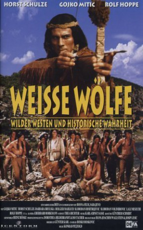

#2522 Weiße Wölfe
Alternativ: Weisse Wölfe
 
 IMDB-Wertung: 6.0 / 10
IMDB-Wertung: 6.0 / 10  Metascore: 0
Metascore: 0 
Eine vierköpfige Gruppe Indianer unter Führung des Weitspähenden Falken zieht im Winter durch die Black Hills. Sie wollen sich dem aus ihrem Indianerreservat geflohenen Stamm von Little Wolf anschließen. Zur selben Zeit trifft im Fort Robinson ein Transport des Händlers Sam Blake ein. Blake hat den Goldhandel in den Black Hills in der Hand, was den mitreisenden Minenboß Harrington an der Expansion seines Geschäfts hindert. Blake transportiert auch das Geld für die Minengesellschaft GMI. Um Blake in Zahlungsschwierigkeiten zu bringen, raubt Bashans Bande mehrfach die Geldtransporte aus. Bashan ist Chef der Wachmannschaft der Goldmine und handelt in Harringtons Auftrag. Auf dem Rückweg von einem Überfall erschießt er Blauhaar, die Frau des Häuptlings. Falke versucht erfolglos, Bashan an der Mine zu töten. Danke an: http://de.wikipedia.org/wiki/Weiße_Wölfe
Jahr: 1969
Dauer: 101 Minuten
FSK: 12
Land: Ost-Deutschland Studio: VEB Progress Film-VertriebTonspuren:
Untertitel:
Auflösung: 1080p (1920x816) Größe: 5601 MB
Genre: Drama, Western, Geschichte
Regisseur: Konrad Petzold, Bosko Boskovic
Drehbuch: Günter Karl, Josip Lesic, Hans-Joachim Wallstein
Soundtrack: Karl-Ernst Sasse
Darsteller:
- Milan Jablonsky als Jim
 Gojko Mitic als Weitspähender Falke
Gojko Mitic als Weitspähender Falke- Horst Schulze als Collins P. Harrington
- Barbara Brylska als Catherine Emerson
- Holger Mahlich als Pat Patterson
- Slobodan Dimitrijevic als Listiger Fuchs
- Slobodan Velimirovic als Starke Linkshand
- Helmut Schreiber als Samuel 'Sam' D. Blake
 Fred Delmare als Peter Hille
Fred Delmare als Peter Hille- Fred Ludwig als John Emerson
 Rolf Hoppe als James Bashan
Rolf Hoppe als James Bashan- Karl Zugowski als Andy Sleek
- Predrag Milinkovic als Indijanac David
- Milivoje Popovic-Mavid als Little Wolf
- Gerry Wolff als Josuah Mc Grave
- Paul Berndt als Bill Myers
- Horst Preusker als Captain Wessels
- Bruno Carstens als Roy
- Hannes Fischer als Bryde
- Lali Meskhi als Blauhaar
- Jochen Thomas als Stumpfmesser
- Djordje Popovic als Junger Dakota
- Milane Allac als Unterhäuptling
- Bogic Boskovic als Indianer
 Michael Gwisdek als (uncredited
Michael Gwisdek als (uncredited- Kurt Kachlicki als Andy Sleek , uncredited
- Werner Schulz-Wittan als Stumpfmesser , uncredited
- Vlajko Sparavalo als Indian , uncredited
- Klaus-Peter Thiele als (uncredited
Datei: X:\HD-Western-Collections\DDR-Western\Weiße Wölfe (1969, FSK12, 1920x816).mkv seit 17.11.2015
Festplatte: HD Eastern+Western
 Es gibt insgesamt 15 Filme in der Gruppe 'HD-Western-Collections\DDR-Western'
Es gibt insgesamt 15 Filme in der Gruppe 'HD-Western-Collections\DDR-Western'